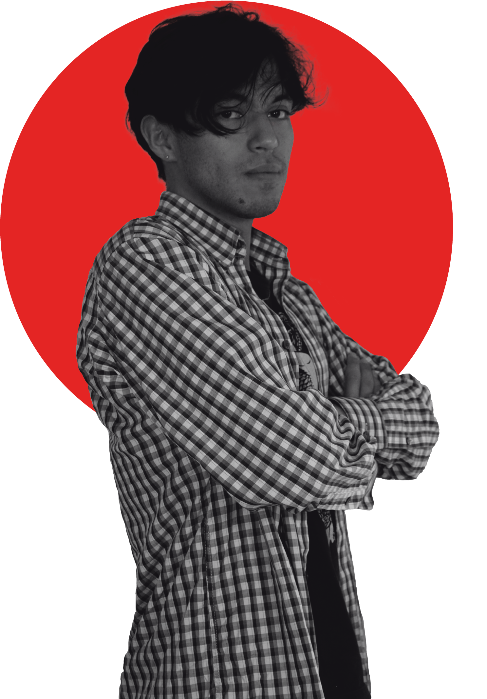

Soy un productor Multimedia, cada trabajo/diseño que hago, lo hago con amor porque esto es lo que me gusta y me llena.
Me caracterizo po ser una persona responsable, creativa, inovadora, le gusta experimentar y sobre todo es respuetuoso, amigable y honrrado. Simpre resalte por tener cierta afinidad para diseñar, en especial logos. Planeo seguir estudienado y especializandome para así seguir puliendo estas habilidades y afiniddades.
Amante a los videojuegos, el anime, el hardware, entre otros. En general siento una atracción hacia la cultura geek. Soy lo que se l podría determinar "un friki"
